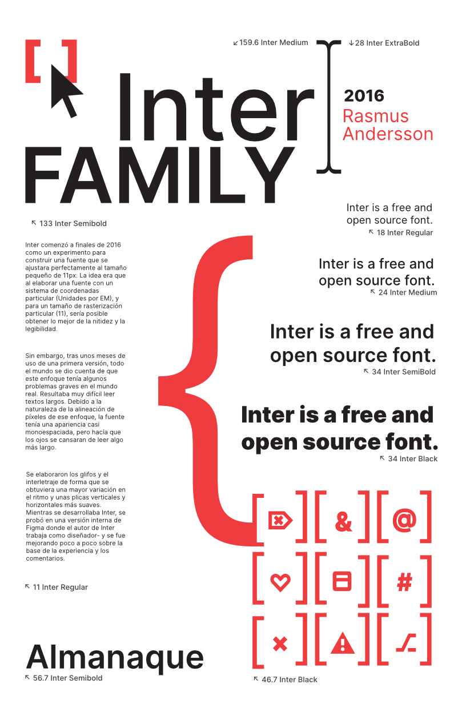
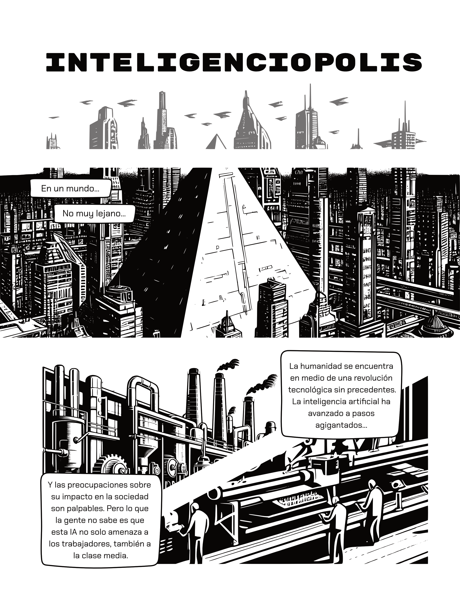
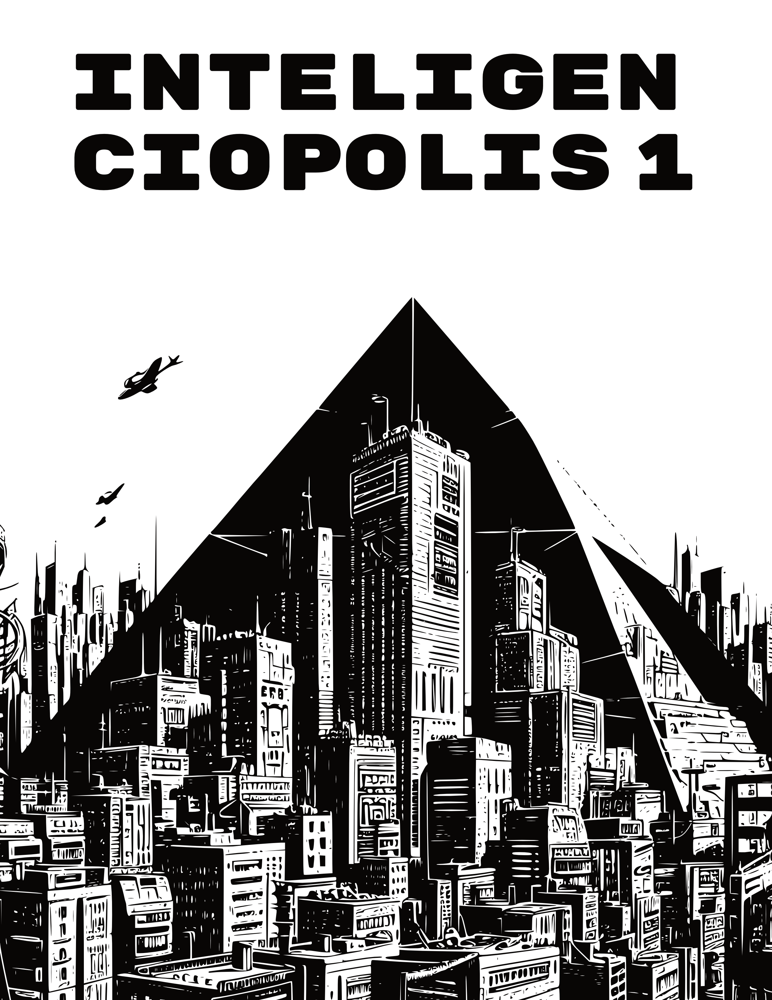

Maro Saracco Cantoral
Maro Saracco Cantoral
¿Quién soy como diseñador?
Espécimen tipográfico
Materia
Aplicación e interpretación tipográfica
Razones
- Fondo blanco para una impresión económica.
- Imágenes de curseros para hacer alución a la tipografía diseñada para pantallas.
- Elemento central de jerarquía dominante común en el código de espécimen tipográfico.
Aprendizajes
- Conocí el papel texturizado caviar.
- Aprendí que es un espécimen tipográfico.
Experiencias
Hacer composiciones tipográficas es de lo más divertido.
Cómic
Integencipolis




Materia
Producción de historieta y caricatura
Razones
- Decidí que la historia tratara el tema de la IA y el desempelo por esta con estética de antiguos cómics occidentales.
- Mantuve la conexión con el género de ciencia ficción mediante por ejemplo, del edificio piramidal que aparece en varias películas.
Aprendizajes
- Estructura de la planeación de un cómic.
- La consistencia necesaria en los propmts de IA para tener regularidad en los personajes generados.
Experiencias
Me impresiona haber terminado en 2 días un cómic entero.
Menú
Los molinos